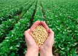
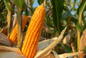

O que é soja OGM?
A soja geneticamente modificada é amplamente utilizada em diversas partes do mundo, seja
para consumo humano ou como ingrediente em ração animal

O que é biotecnologia no milho?
Essa tecnologia permite a identificação de regiões no genoma de plantas responsáveis por
importantes características agronômicas e sua rápida transfência para outros genótipos.
O milho transgênico pode ter várias vantagens, como maior produtividade,
resistência a pragas e doenças, e redução do uso de defensivos agrícolas.